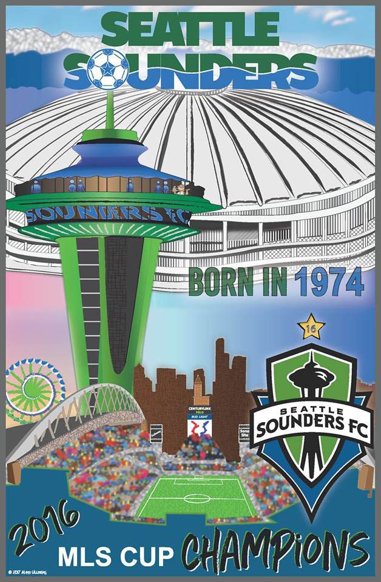

Seattle Sounders
History
The Seattle Sounders have a rich history and a very passionate fanbase. The original Sounders were "Born in 1974" and participated in the North American Soccer League (NASL). At their inception they played their games in Memorial Stadium, with a wonderful view of the Space Needle next-door. In that first year the Sounders had 6 sellouts of nearly 14,000 fans. The following year they expanded capacity and set an NASL attendance record with a crowd of 17,925.
In 1976 the team moved to their new home, the Kingdome (a fully enclosed concrete monstrosity). Attendance was 58,128 for their first game in the new stadium against Pele and the New York Cosmos. Average attendance over the next several years ranged from 19k-24k. In 1983 the demise of the Sounders was near and their average attendance was down to 8,300. The following year, 1984, the entire league went under. In the years that followed the Sounders were re-invented several times in semi-professional indoor and outdoor leagues.
In 2007 the Sounders were awarded a Major League Soccer (MLS) expansion franchise. In their inaugural 2009 season they had 22,000 season ticketholders and a sold-out opening game attendance of 32,523. During the 2009 season the team averaged 30,943 fans per game, made the playoffs in their first season, and took home hardware, winning the Lamar Hunt U.S. Open Cup.
During their tenure in MLS, the Seattle Sounders have made the playoffs every year. Their average attendance at CenturyLink field has increased from nearly 31,000 fans in 2009 to over 44,000 in 2015. The Sounders average attendance in 2017 was 43,555 and the team was overtaken at the top by Atlanta FC (a 2017 expansion team) at 48,200 average. The lowest attended teams in MLS are averaging just over 15,000 per game, while all but the top four teams are averaging under 23,000. Most MLS soccer-specific stadiums have a capacity @ 20,000. Seattle has proven to have an exceptional base of fans, averaging well over 40,000 each game. Soccer is certainly alive and kickin' in Seattle.
In 2016 the Sounders were struggling and at the bottom of their conference in the standings. The head coach for their first 8 years was fired at mid-season and replaced with long-time assistant and Seattle-native, Brian Schmetzer. Uruguayan Nicolas Lodeiro was brought in during the summer transfer window to become the playmaker and midfield leader the team desperately needed. He sparked the offense and the Sounders proceeded to turn their season around. During this run, they lost one of their best players (Clint Dempsey). This did not stop the team from making the playoffs and incredibly, advancing to the MLS Cup where they beat Toronto FC on penalty kicks after 120 minutes of a scoreless draw.
Honors
- MLS Cup - 2016
- U.S. Open Cup - 2009, 2010, 2011 & 2014
- MLS Supporters' Sheild - 2014
- MLS Western Conference Champions - 2016 & 2017
- MLS Western Conference (Regular Season) - 2014
- Cascadia Cup - 2006, 2007, 2011 & 2015